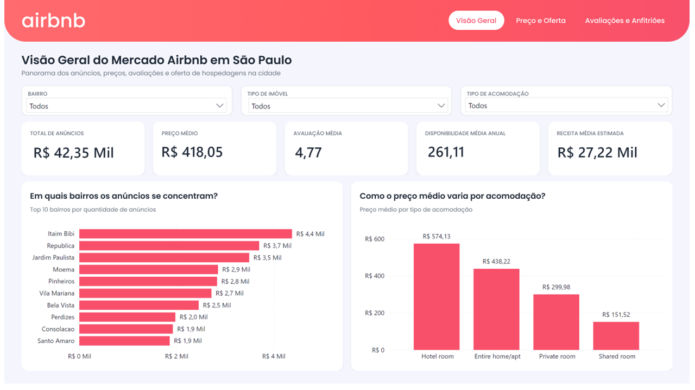
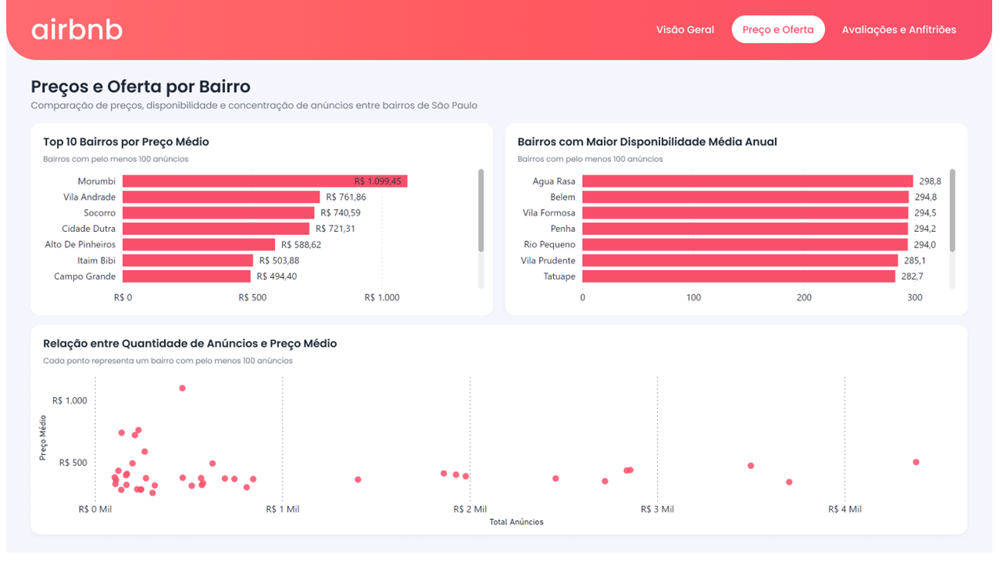
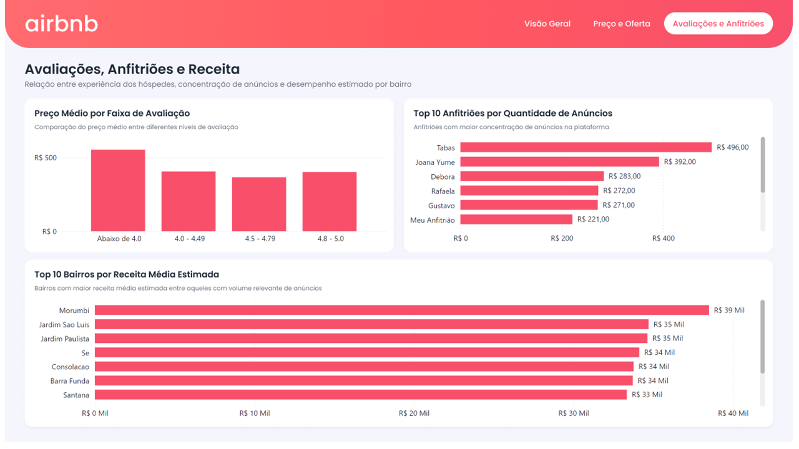

Inside Airbnb
Dataset público de anúncios de São Paulo.
Análise end-to-end de 42.354 anúncios para compreender preços, oferta, avaliações, disponibilidade e receita estimada no mercado de hospedagens de São Paulo.

Abrir dashboard open_in_new42.354 anúncios
Python · PostgreSQL · Power BI
3 visões analíticas
Transformar dados públicos brutos do Inside Airbnb em uma visão analítica do mercado de hospedagens de São Paulo, investigando distribuição dos anúncios, preços, disponibilidade, avaliações, anfitriões e desempenho estimado.
Conhecer a fonte dos dados arrow_outwardComo compreender o comportamento do mercado Airbnb em São Paulo e identificar fatores associados à oferta, ao preço e ao desempenho dos anúncios?
Dataset público de anúncios de São Paulo.
Exploração, limpeza e validação da base.
Persistência e modelagem dos dados tratados.
Consultas de negócio e views analíticas.
Medidas DAX e storytelling em três páginas.
listings_clean, com um anúncio por linha.O dashboard conecta indicadores gerais, preços, disponibilidade, avaliações, concentração de anfitriões e receita média estimada.
Panorama dos anúncios, preço, avaliação, disponibilidade e receita média estimada.

Comparação de preços, disponibilidade e concentração entre bairros.

Experiência dos hóspedes, concentração de anúncios e desempenho estimado.
Os bairros com mais anúncios não são necessariamente os que apresentam os maiores preços médios.
Imóveis inteiros combinam grande volume e preço médio elevado; quartos de hotel lideram em preço, mas têm baixa oferta.
Entre bairros com volume relevante, o Morumbi apresentou os maiores valores de preço e receita média estimada.
O projeto entrega um pipeline reproduzível com notebooks, estrutura PostgreSQL, consultas SQL, views analíticas, medidas DAX e um dashboard de três páginas. A base analisada possui 42.354 anúncios, preço médio de R$ 418,05, avaliação média de 4,77 e disponibilidade média anual de 261 dias.
Disponibilidade não equivale à ocupação real, e a receita apresentada é uma estimativa analítica — não faturamento oficial dos anfitriões.
Consulte os notebooks, scripts SQL, dicionário de dados e decisões de limpeza no repositório.